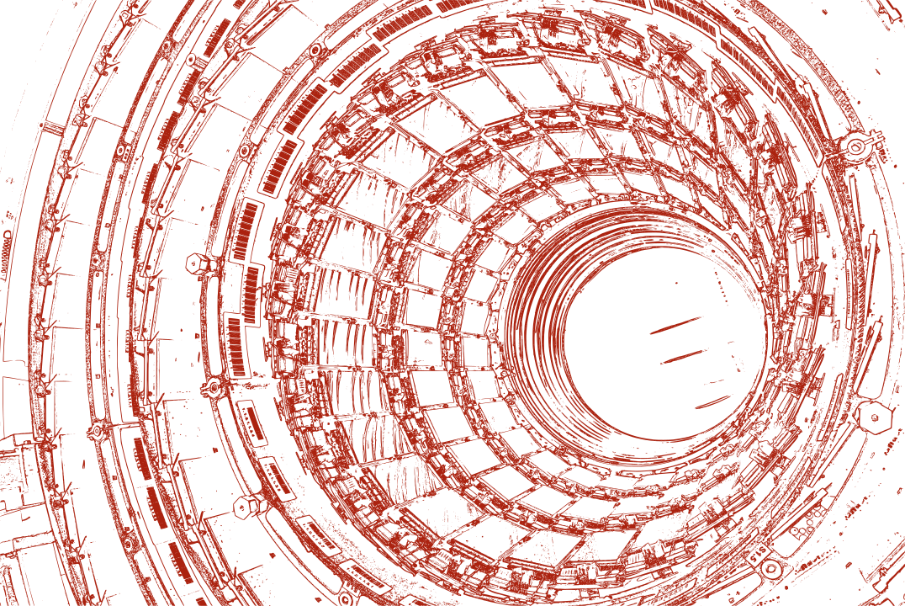

Portitor ullamcorper
Aenean ornare velit lacus, ac varius enim lorem ullamcorper dolore. Proin aliquam facilisis ante interdum. Sed nulla amet lorem feugiat tempus aliquam.
Palavras fortes aqui...!
Minha jornada na ciência começou no final do médio, quando descobri alguns canais de divulgação científica. Ao entrar na universidade, criei gosto pelo que chamo de "hard science" e senti vontade de compartilhar o que estava aprendendo. Inspirado pelo professor Derley e por seu site, o Resenha Sci-Fi resolvi colocar a mão na massa e criar este site.
O site também funciona como um portfólio, onde publico e comento minhas pesquisas acadêmicas atuais e revisito tudo o que já fiz na universidade: apresentações orais, pôsteres e outros trabalhos. Caso queira discutir algo, fique à vontade para me contatar por e-mail ou pelas redes sociais. Se tiver tempo, ficarei feliz em responder!
Aqui na página principal explico a estrutura geral do site e falo um pouco sobre mim no final. A ideia é que essa página seja uma breve introdução ao site para novos visitantes.

Minhas principais áreas de interesse são:
Aenean ornare velit lacus, ac varius enim lorem ullamcorper dolore. Proin aliquam facilisis ante interdum. Sed nulla amet lorem feugiat tempus aliquam.
Aenean ornare velit lacus, ac varius enim lorem ullamcorper dolore. Proin aliquam facilisis ante interdum. Sed nulla amet lorem feugiat tempus aliquam.
Aenean ornare velit lacus, ac varius enim lorem ullamcorper dolore. Proin aliquam facilisis ante interdum. Sed nulla amet lorem feugiat tempus aliquam.
Aenean ornare velit lacus, ac varius enim lorem ullamcorper dolore. Proin aliquam facilisis ante interdum. Sed nulla amet lorem feugiat tempus aliquam.
Sou Willian Bonner, ou "Jimi", bacharel em Física pela Universidade Federal de Sergipe (UFS). Minha trajetória acadêmica integra, à formação física, uma sólida base em matemática pura com ênfase em Análise Real e Geometria Diferencial, complementada por disciplinas avançadas do curso de Matemática e quatro iniciações científicas, nas quais utilizei o sistema de álgebra computacional Maxima para calcular propriedades geométricas e o operador de Laplace-Beltrami em espaços curvos. No Trabalho de Conclusão de Curso, explorei a dinâmica não-linear de lasers por meio das equações de taxa e do sistema de Maxwell-Bloch, identificando regimes caóticos via simulações numéricas em Python. Meu foco atual está na interseção entre geometria de variedades, Mecânica Quântica, Relatividade Geral e métodos teórico-computacionais aplicados à Física-Matemática.
.png)

Publicação do TCC aqui.

Publicação da minha última IC

A pensar...
Adoro conversar sobre física, matemática e ciências em geral! Se tiver dúvidas, perguntas, sugestões
Me acompanhe: